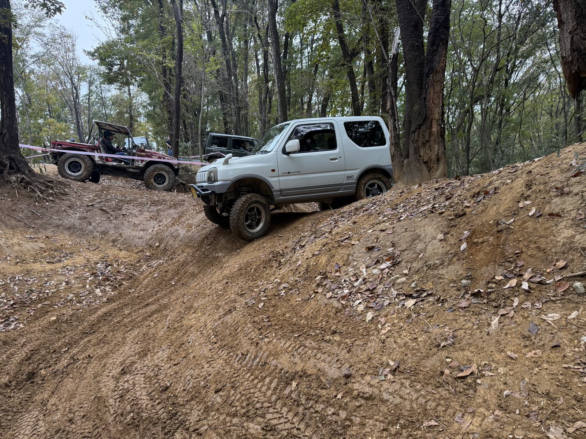
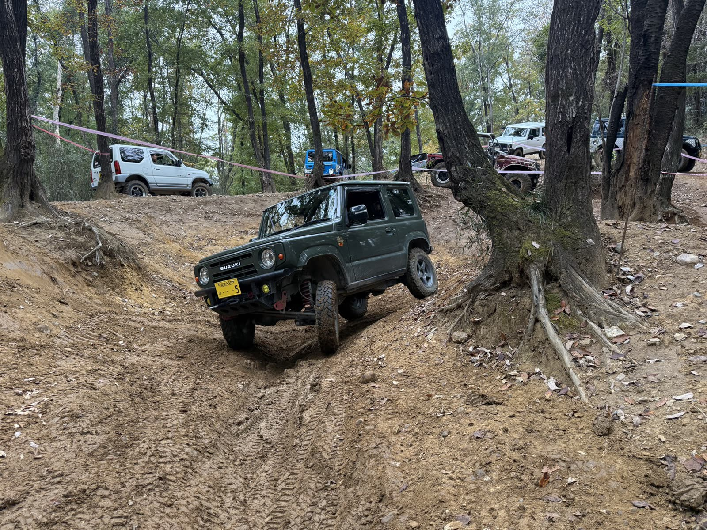
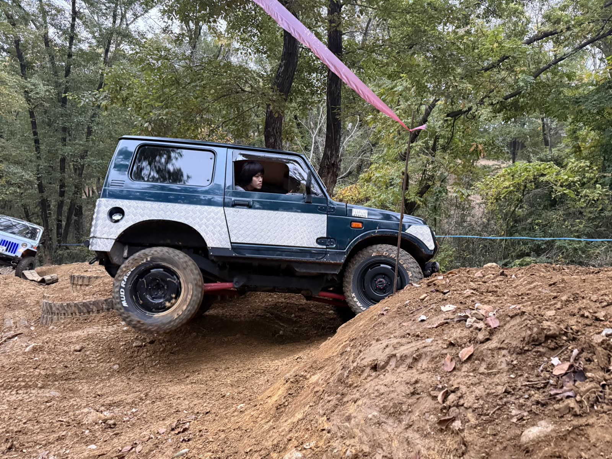
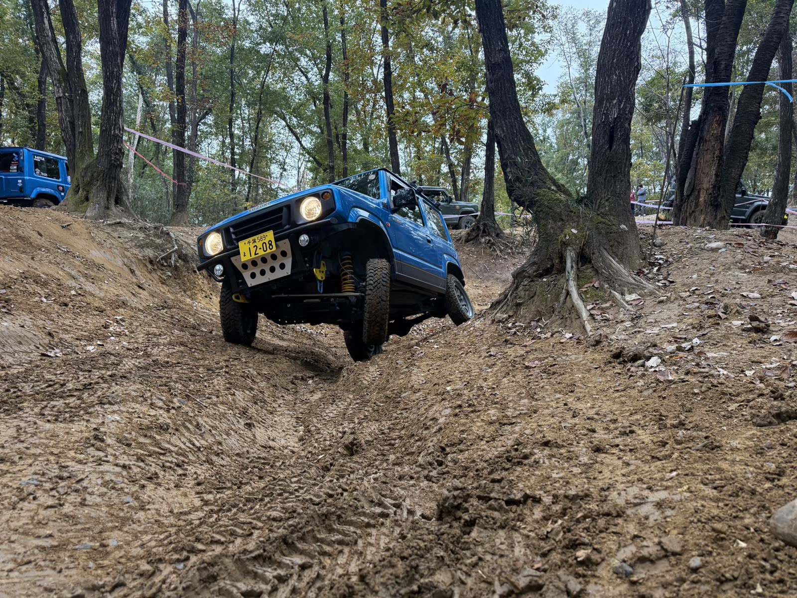
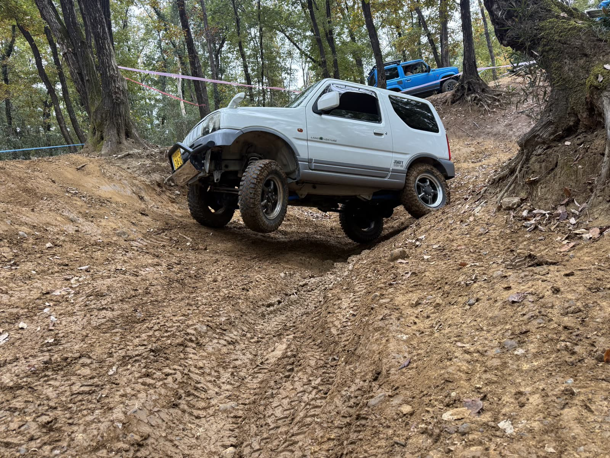
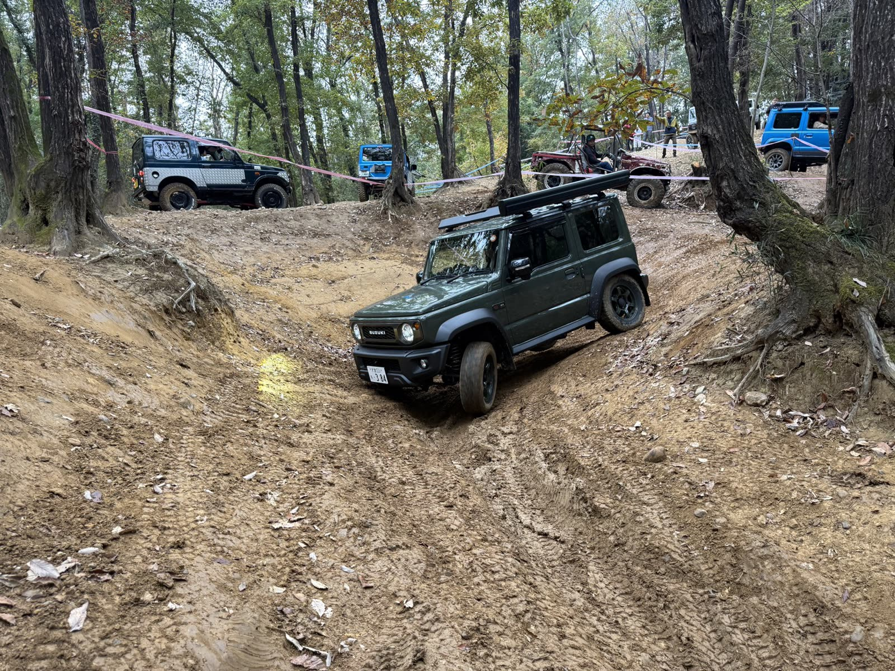
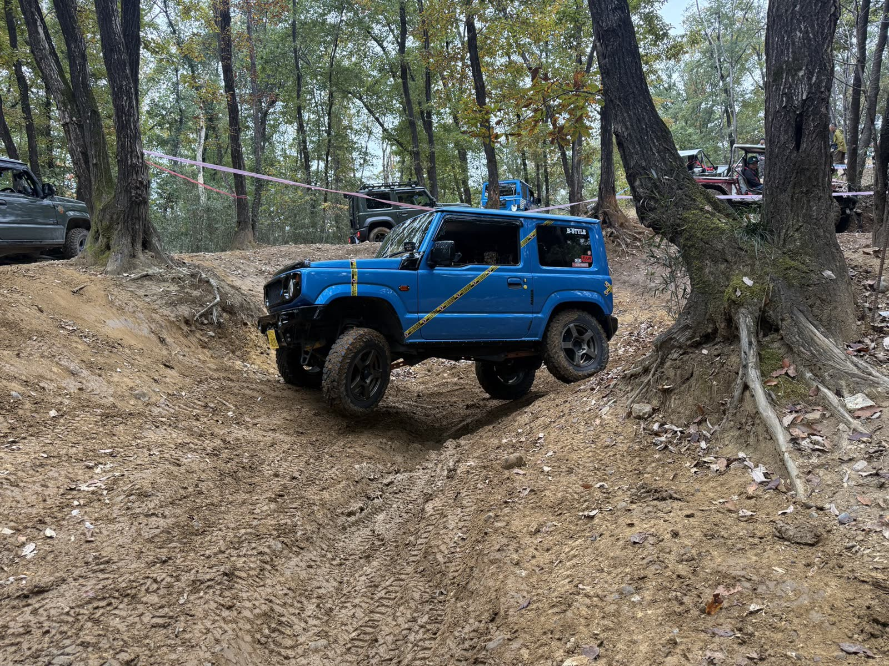
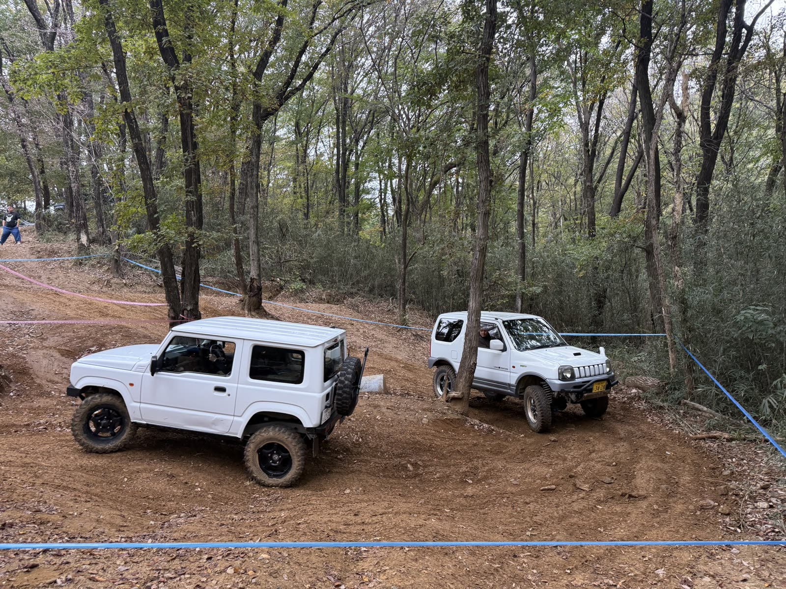
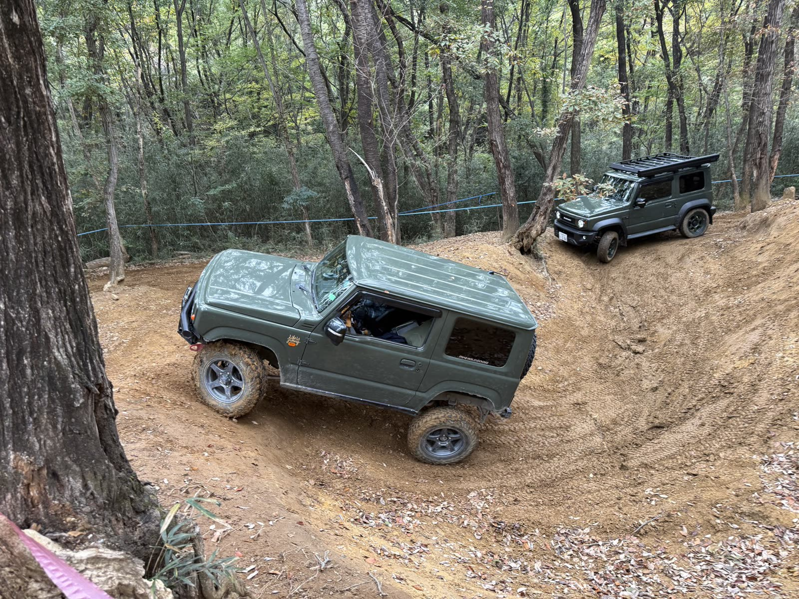
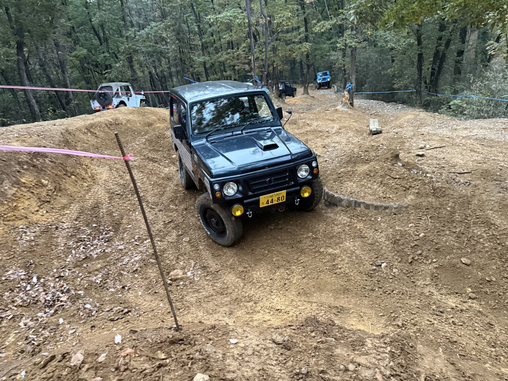

皆さんこんにちは、B-STYLEです。
11月15日、埼玉県のEJTC鳩山でオフロードの練習会を行いました。走行会というより、今回は「練習会」です。

今回集まってくれたのは、オフロードが全くもって初めての人から、たまに遊んでいる人、そしてすっかり常連になったメンバーまでさまざま。レベルはバラバラでしたが、終わってみれば参加者全員が、それぞれ一歩前に進めた一日になりました。

特に印象に残っているのは、オフロードがほぼ初めてという方の変化です。最初はラインどりもアクセルワークも恐る恐るで、斜面を前に何度も止まってしまう場面がありました。
でも一つずつコツを伝えながら繰り返すうちに、だんだん表情から力みが抜けていって、最後の方にはしっかり自分の判断でラインを選べるようになっていました。この「できなかったことが、できるようになる瞬間」に立ち会えるのは、教える側としても本当にうれしいものです。

もちろん初心者さんだけではありません。ちょこちょこ遊びに来ているメンバーは、少し難しいセクションに挑戦して新しい感覚をつかんでいましたし、常連さんはさらに繊細なアクセルコントロールを意識して走り込んでいました。レベルが違っても、その日ごとに掴める「伸びしろ」はちゃんとあるんだなと、あらためて感じた一日でした。






「オフロードに興味はあるけど、何から始めていいかわからない」「車は持っているけど、まだ本格的なコースは走ったことがない」という方こそ、練習会向きです。みんな最初は同じところからスタートしています。無理のないペースで、一つずつ確実にステップアップしていきましょう。

今回ご参加いただいた皆様、お疲れ様でした。初めての方も、常連の方も、それぞれのペースで確実に成長が見られた一日でした。次回の練習会・走行会でも、またお会いできるのを楽しみにしています。
オフロード走行やジムニーカスタムにご興味のある方は、お気軽にお問い合わせください。
お問い合わせフォームへ →